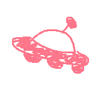

유메와빠와~ 한 문장으로 뱅드림 플레이리스트를 말아드립니다.
여기서 플레이리스트를 직접 다듬을 수 있어요. 바꾼 설정은 같은 요청에서 유지되고, 프롬프트를 새 내용으로 바꾸면 다시 자동으로 맞춰드려요.
플레이리스트를 만드는 중입니다~ 🎶
백엔드가 잠들어 있었다면 첫 응답이 조금 느릴 수 있어요.
아래 링크를 공유하면 누구나 같은 곡·순서로 들을 수 있어요.
※ Google 로그인 후 내 계정에 실제 YouTube 재생목록으로 저장돼요(비공개).